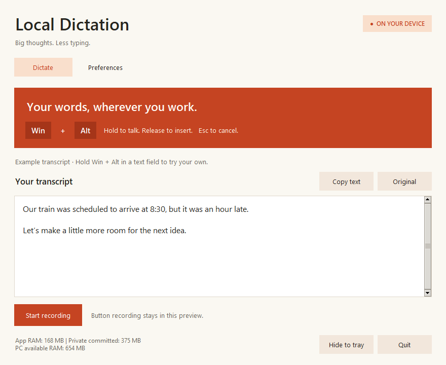

Find your place.
Click a text field in your email, notes, or document. That’s where your words will go.
OFFLINE DICTATION. ONLINE WITH YOUR IDEAS.
Your next email, brilliant idea, or very long message.
Just say it. Get it into words. Keep it on your PC.
Free & open source · Windows 10/11 x64 · No account
“hey team let's move our brainstorm to tomorrow at half past nine”
Hey team, let's move our brainstorm to tomorrow at 9:30.
One download. Everything included.
No subscription. No API bill.
Speech processing stays on your PC.
Your shortcut from thought to text.
LESS BUSYWORK. MORE YOU.
Turn a typing task into a talking task. Adjust the example to see how much time you could get back.
There’s research behind the idea.
A 2016 study found speech input about 3× faster than smartphone typing in English. It tested a different system on phones—not this app or desktop keyboards. Read the study ↗
Illustrative estimate, not an app benchmark. Defaults are assumptions. Your voice, PC, pauses, and corrections affect the result. Include them in the extra-time estimate.
LESS FRICTION, MORE EXPRESSION
Keep your attention on the thought.
Local Dictation takes care of getting it down.
Click a text field in your email, notes, or document. That’s where your words will go.
Hold Win + Alt and say what’s on your mind. Your microphone listens while you hold.
Let go to transcribe and insert. Review your words, or copy from the app if a field blocks insertion.
PRESS PLAY. GET THE IDEA.
Local recognition, punctuation, and simple time formatting help turn a thought into a useful sentence.
Scripted demonstration. This page does not use your microphone.
Actual recognition varies with your voice and recording conditions.
“our train was scheduled to arrive at half past eight but it was an hour late”
Our train was scheduled to arrive at 8:30, but it was an hour late.
SMALL APP. BIG EXHALE.
A clear place to dictate, check your transcript, and make it your own. Then tuck it into the tray and get back to your day.

PERSONAL REALLY MEANS PERSONAL
Speech is processed on your computer. Audio stays in memory, and your last transcript stays in the app while it’s open. No cloud transcription. No passive conversation history.
GOOD TO KNOW
Yes. There is no subscription, account, or paid API. The app runs open-source speech recognition on your PC. The installer includes its runtime, dependencies, and speech models.
A Windows installer named LocalDictation-Setup.exe. Open it, review the license, choose a destination on C:, G:, or another writable drive, choose shortcuts, and install. Python and local models are included. The final screen can launch the app.
This release targets 64-bit Windows 10 and 11. We recommend starting with 8 GB RAM and at least 2 GB of free storage. It was tested on an Intel i5 laptop with 8 GB RAM; performance on other PCs varies. A microphone is required. Once you have the installer, setup needs no internet connection.
Yes. The downloaded installer contains everything required for setup and dictation. Recognition, punctuation, time formatting, and saved corrections all run locally. The lightweight English model and punctuation are included.
This beta installer is not code-signed, so Windows may display an unknown-publisher or reputation warning. The download checksum is provided below. It checks file integrity; it is not a substitute for publisher signing.
Not yet. This version focuses on English speech recognition, punctuation, spacing, and supported time phrases. It can still mishear words or place punctuation incorrectly, so review important text. Full grammar rewriting is not included.
It works in ordinary Windows text fields that accept simulated typing. Some protected or administrator-level applications may block insertion. You can always copy the transcript from the app. Keep the target window active while it transcribes.
The app and models stay in the installation folder you choose. Settings and saved corrections are kept separately in %LOCALAPPDATA%\LocalDictation. Uninstalling removes the app and models but preserves those preferences. Windows may use temporary space during installation.
MAKE SPACE FOR YOUR NEXT THOUGHT
Your voice is ready. Your next draft is waiting.
Download for WindowsUnsigned beta: Windows may show a SmartScreen warning. What to know ↓